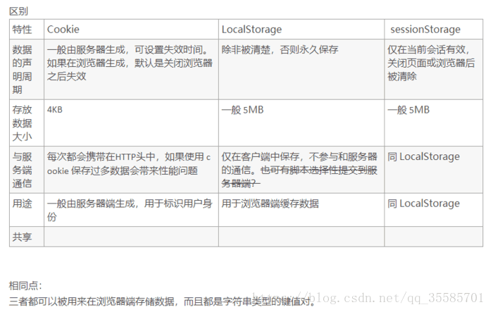

<!DOCTYPE html>
<html>
<head><meta name="generator" content="Hexo 3.9.0">
    <meta charset="UTF-8">
    <title>理解cookie、session、localStorage、sessionStorage之不同 | DD_XIE的学习笔记</title>
    <meta name="viewport" content="width=device-width, initial-scale=1, maximum-scale=1">
    <meta name="keywords" content="">
    <meta name="description" content="理解cookie、session、localStorage、sessionStorage之不同

1、相同点：数据都保存在浏览器，同源共享。即相同的域下可以修改读取。

2、不同点：
   大小数量： IE6或更低版本最多20个cookie，IE7+可以有50个。 cookie大小4KB左右，超过部分会被截掉。sessionStoage，localStoage大小可达5M。
   传输： 每次请求cookie都会发送到服务器，然后回传给浏览器，sessionStoage,localStoage不会自动发送到服务器端。
 有效性：cookie可以设置path路径，限制只属于某个路径。在过期时间之前都有效，即使窗口和浏览器关...">
    
        <link rel="icon" href="/favicon.ico">
    
    
        
            <link rel="stylesheet" href="/lib/font-awesome/css/font-awesome.min.css">
        
            <link rel="stylesheet" href="/css/stage.css">
        
            <link rel="stylesheet" href="/css/avatar-bg.css">
        
    
</head>
</html>
<body>
<header id="header">
    <div class="menu">
        <i class="fa fa-bars"></i>
    </div>
    <div class="header-main">
        <h1><a href="/">DD_XIE的学习笔记</a></h1>
    </div>
    <div id="nav">
        <div class="nav-img" id="nav-img"></div>
        <div class="sentences">
            云里写诗，泥里生活，岁月里洒脱。
        </div>
    </div>
</header>

<div id="content-outer">
    <div id="content-inner">
        <div class="clearfix">
    <article id="post">
        <h1>理解cookie、session、localStorage、sessionStorage之不同</h1>
        <div class="create">
            <span>创建于</span>
            
                <time datetime="2019-01-02T02:03:31.000Z">
                    2019-01-02
                </time>
            
            <ul class="article-category-list"><li class="article-category-list-item"><a class="article-category-list-link" href="/categories/基础前端技术/">基础前端技术</a></li></ul>
        </div>
        <h1 id="理解cookie、session、localStorage、sessionStorage之不同"><a href="#理解cookie、session、localStorage、sessionStorage之不同" class="headerlink" title="理解cookie、session、localStorage、sessionStorage之不同"></a>理解cookie、session、localStorage、sessionStorage之不同</h1><p></p>
<ul>
<li><p>1、相同点：数据都保存在浏览器，同源共享。即相同的域下可以修改读取。</p>
</li>
<li><p>2、不同点：</p>
<p>   <font color="red">大小数量： </font>IE6或更低版本最多20个cookie，IE7+可以有50个。 cookie大小4KB左右，超过部分会被截掉。sessionStoage，localStoage大小可达5M。</p>
<p>   <font color="red">传输： </font>每次请求cookie都会发送到服务器，然后回传给浏览器，sessionStoage,localStoage不会自动发送到服务器端。</p>
<p> <font color="red">有效性：</font>cookie可以设置path路径，限制只属于某个路径。在过期时间之前都有效，即使窗口和浏览器关闭。sesesionStorage当前窗口有效，关闭窗口自动失效。localStorage始终有效，即使窗口和浏览器关闭。</p>
<p> <font color="red">作用域：</font>cookie在同源页面中共享，sessionStorage只能在当前页有效，localStorage在所有同源页面中共享。</p>
<p>  <font color="red">操作方法：</font>Cookie的修改读取方法需自己实现，sessionStorage，localStorage提供了get，set方法。    </p>
</li>
</ul>
<p>注：cookie是不可以或缺的，cookie的作用是与服务器进行交互，作为HTTP规范的一部分而存在 ，而Web Storage仅仅是为了在本地“存储”数据而生。</p>
<h1 id="web-Storage支持的属性与方法"><a href="#web-Storage支持的属性与方法" class="headerlink" title="web Storage支持的属性与方法"></a>web Storage支持的属性与方法</h1><p>localStorage和sessionStorage都具有相同的操作方法，例如setItem、getItem和removeItem等</p>
<p>getItem(key):获取指定key所存储的value值<br>key(index)方法：返回列表中对应索引的key值<br>length属性：返回key/value队列的长度<br>removeItem(key)方法：从Storage中删除一个对应的键值对。<br>setItem(key,value)方法：将value存储到key指定的字段。<br>clear()方法：移除所有的内容</p>

        <div>
            <ul class="tags-category-list"><li class="tags-category-list-item"><a class="tags-category-list-link" href="/tags/cookie/">cookie</a></li></ul>
        </div>
        <div class="bottom-line"></div>
        
    <nav id="article-nav">
        
            <a href="/2019/01/02/遍历数组的常用方法/" id="article-nav-newer" class="article-nav-link-wrap">
        <span class="article-nav-title">
            
                遍历数组的常用方法
            
        </span>
                <strong class="article-nav-caption">&gt;</strong>
            </a>
        
        
            <a href="/2019/01/01/跨域/" id="article-nav-older" class="article-nav-link-wrap">
                <strong class="article-nav-caption">&lt;</strong>
                <span class="article-nav-title">
                    
                        跨域
                </span>
                
            </a>
        
    </nav>


        
    </article>
    <div id="toc">
        
            <h2>文章目录</h2>
            <ol class="toc"><li class="toc-item toc-level-1"><a class="toc-link" href="#理解cookie、session、localStorage、sessionStorage之不同"><span class="toc-number">1.</span> <span class="toc-text">理解cookie、session、localStorage、sessionStorage之不同</span></a></li><li class="toc-item toc-level-1"><a class="toc-link" href="#web-Storage支持的属性与方法"><span class="toc-number">2.</span> <span class="toc-text">web Storage支持的属性与方法</span></a></li></ol>
        
    </div>
</div>

    </div>
</div>
<footer id="footer">
     <div id="copyright">&copy; I&#39;m xiedandan  2020</div>
     
             <!-- 不蒜子统计 -->
             <span id="busuanzi_container_site_pv">
                     本站总访问量<span id="busuanzi_value_site_pv" style='color:#17a167'></span>次
             </span>
             <span class="post-meta-divider">|</span>
             <span id="busuanzi_container_site_uv">
                     本站访客数<span id="busuanzi_value_site_uv"  style='color:#17a167'></span>人
             </span>
             <script async src="//busuanzi.ibruce.info/busuanzi/2.3/busuanzi.pure.mini.js"></script>
       
    <div id="theme">
        Powered by <a href="http://hexo.io">Hexo</a>. Theme by <a href="https://github.com/markyong/hexo-theme-stage">Stage</a>
    </div>
</footer>
<script src="/lib/js/waterrippleeffect.min.js"></script>
<script src="/js/header-bg.main.js"></script>

    <script src="/lib/js/smooth-scroll.min.js"></script>
    <script src="/js/toc.main.js"></script>

</body>
</html>
